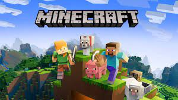
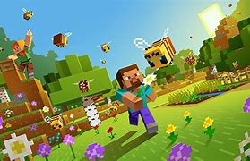
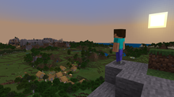
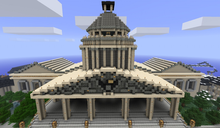

Minecraft Definition
Minecraft is a sandbox video game developed by the Swedish video game developer Mojang Studios. The game was created by Markus "Notch" Persson in the Java programming language. Following several early private testing versions, it was first made public in May 2009 before fully releasing in November 2011, with Jens Bergensten then taking over development. Minecraft has since been ported to several other platforms and is the best-selling video game of all time, with over 200 million copies sold and over 140 million monthly active users as of 2021.[18] In Minecraft, players explore a blocky, procedurally-generated 3D world with virtually infinite terrain, and may discover and extract raw materials, craft tools and items, and build structures or earthworks. Depending on game mode, players can fight computer-controlled mobs, as well as cooperate with or compete against other players in the same world. Game modes include a survival mode, in which players must acquire resources to build the world and maintain health, and a creative mode, where players have unlimited resources and access to flight. Players can modify the game to create new gameplay mechanics, items, and assets. Minecraft has been critically acclaimed, winning several awards and being cited as one of the greatest video games of all time. Social media, parodies, adaptations, merchandise, and the annual MineCon conventions played large roles in popularizing the game. The game has also been used in educational environments to teach chemistry, computer-aided design, and computer science. In 2014, Mojang and the Minecraft intellectual property were purchased by Microsoft for US$2.5 billion. A number of spin-off games have also been produced, such as Minecraft: Story Mode, Minecraft Dungeons, and Minecraft Earth.
Minecraft Gameplay
Minecraft is a 3D sandbox game that has no specific goals to accomplish, allowing players a large amount of freedom in choosing how to play the game.[19] However, there is an achievement system,[20] known as "advancements" in the Java Edition of the game, and "trophies" on the PlayStation ports.[21] Gameplay is in the first-person perspective by default, but players have the option for third-person perspective.[22] The game world is composed of rough 3D objects—mainly cubes and fluids, and commonly called "blocks"—representing various materials, such as dirt, stone, ores, tree trunks, water, and lava. The core gameplay revolves around picking up and placing these objects. These blocks are arranged in a 3D grid, while players can move freely around the world. Players can "mine" blocks and then place them elsewhere, enabling them to build things.[23] Many commentators have described the game's physics system as unrealistic.[24] The game also contains a material known as redstone, which can be used to make primitive mechanical devices, electrical circuits, and logic gates, allowing for the construction of many complex systems.[25]....... The game world is virtually infinite and procedurally generated as players explore it, using a map seed that is obtained from the system clock at the time of world creation (or manually specified by the player).[26][27][28] There are limits on vertical movement, but Minecraft allows an infinitely large game world to be generated on the horizontal plane. Due to technical problems when extremely distant locations are reached, however, there is a barrier preventing players from traversing to locations beyond 30,000,000 blocks from the center.[i] The game achieves this by splitting the world data into smaller sections called "chunks" that are only created or loaded when players are nearby.[26] The world is divided into biomes ranging from deserts to jungles to snowfields;[29][30] the terrain includes plains, mountains, forests, caves, and various lava/water bodies.[28] The in-game time system follows a day and night cycle, and one full cycle lasts 20 real-time minutes.......... When starting a new world, players must choose one of five game modes, as well as one of four difficulties, ranging from peaceful to hard. Increasing the difficulty of the game causes the player to take more damage from mobs, as well as having other difficulty-specific effects. For example, the peaceful difficulty prevents hostile mobs from spawning, and the hard difficulty allows players to starve to death if their hunger bar is depleted.[31] Once selected, the difficulty can be changed, but the game mode is locked and can only be changed with cheats.
Minecraft Multiplayer
Multiplayer in Minecraft enables multiple players to interact and communicate with each other on a single world. It is available through direct game-to-game multiplayer, LAN play, local split screen (console-only), and servers (player-hosted and business-hosted).[65] Players can run their own servers, use a hosting provider, or connect directly to another player's game via Xbox Live. Single-player worlds have local area network support, allowing players to join a world on locally interconnected computers without a server setup.[66] Minecraft multiplayer servers are guided by server operators, who have access to server commands such as setting the time of day and teleporting players. Operators can also set up restrictions concerning which usernames or IP addresses are allowed or disallowed to enter the server.[65] Multiplayer servers have a wide range of activities, with some servers having their own unique rules and customs. The largest and most popular server is Hypixel, which has been visited by over 14 million unique players.[67][68] Player versus player combat (PvP) can be enabled to allow fighting between players.[69] Many servers have custom plugins that allow actions that are not normally possible.
Minecraft Games modes :
survival mode : In survival mode, players have to gather natural resources such as wood and stone found in the environment in order to craft certain blocks and items.[28] Depending on the difficulty, monsters spawn in darker areas outside a certain radius of the character, requiring players to build a shelter at night.[28] The mode also has a health bar which is depleted by attacks from mobs, falls, drowning, falling into lava, suffocation, starvation, and other events.[43] Players also have a hunger bar, which must be periodically refilled by eating food in-game, except in peaceful difficulty.[43][44] If the hunger bar is depleted, automatic healing will stop and eventually health will deplete. Health replenishes when players have a nearly full hunger bar or continuously on peaceful difficulty.[44][45] Players can craft a wide variety of items in Minecraft.[46] Craftable items include armor, which mitigates damage from attacks; weapons (such as swords or axes), which allows monsters and animals to be killed more easily; and tools, which break certain types of blocks more quickly. Some items have multiple tiers depending on the material used to craft them, with higher-tier items being more effective and durable. Players can construct furnaces, which can cook food, process ores, and convert materials into other materials.[47] Players may also exchange goods with a villager (NPC) through a trading system, which involves trading emeralds for different goods and vice versa.[48][34] The game has an inventory system, allowing players to carry a limited number of items.[49] Upon dying, items in the players' inventories are dropped unless the game is reconfigured not to do so. Players then re-spawn at their spawn point, which by default is where players first spawn in the game, and can be reset by sleeping in a bed[50] or using a respawn anchor.[51][52] Dropped items can be recovered if players can reach them before they disappear or despawn after 5 minutes. Players may acquire experience points by killing mobs and other players, mining, smelting ores, breeding animals, and cooking food. Experience can then be spent on enchanting tools, armor and weapons.[31] Enchanted items are generally more powerful, last longer, or have other special effects.[31]
creative mode : In creative mode, players have access to nearly all resources and items in the game through the inventory menu, and can place or remove them instantly.[56] Players can toggle the ability to fly freely around the game world at will, and their characters do not take any damage and are not affected by hunger.[57][58] The game mode helps players focus on building and creating projects of any size without disturbance
Hardcore mode : Hardcore mode is a survival mode variant that is locked to the hardest setting and has permadeath.[53] If a player dies in a hardcore world, they are no longer allowed to interact with it, so they can either be put into spectator mode and explore the world or delete it entirely.[54] This game mode can only be accessed within the Java Edition.[55]
Adventure mode : Adventure mode was designed specifically so that players could experience user-crafted custom maps and adventures.[59][60][61] Gameplay is similar to survival mode but with various restrictions, which can be applied to the game world by the creator of the map. This forces players to obtain the required items and experience adventures in the way that the map maker intended.[61] Another addition designed for custom maps is the command block; this block allows map makers to expand interactions with players through scripted server commands.[62]
Spectator mode : Spectator mode allows players to fly through blocks and watch gameplay without directly interacting. Players do not have an inventory, but can teleport to other players and view from the perspective of another player or creature.[63] This game mode can only be accessed within Java Edition and Console Legacy Editions.[64]